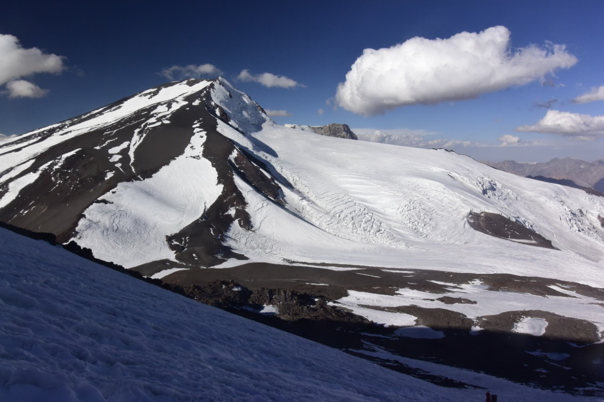
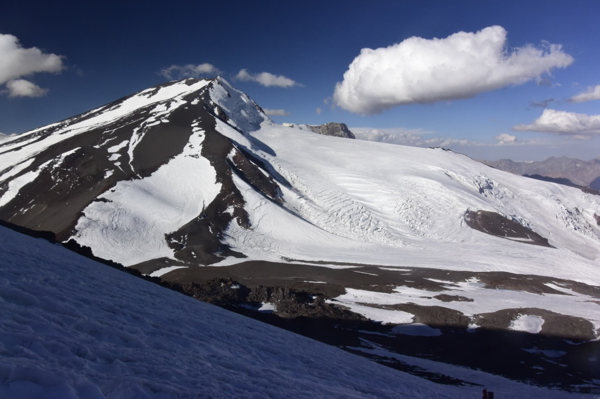

Nuestro Proyecto
Alta Montaña
... Y el cono que distinguía desde los campos inferiores, simple grano de arena sobre otro grano llamado tierra, me parece ahora un mundo. Ya veo desde la cabaña a algunos centenares de metros sobre mi cabeza una cresta de rocas que parece ser la cima; pero si llego a trepar a ella veré alzarse otra cumbre por encima de las nieves. Si subo a otra escarpadura, parecerá que la montaña cambia de forma ante mis ojos. De cada punta, de cada barranco, de cada vertiente el paisaje aparece con distinto relieve, con otro perfil. El monte es un grupo de montañas por sí solo, como en medio del mar está compuesta cada ola de innumerables ondillas. Para apreciar en conjunto la arquitectura de la montaña, hay que estudiarla y recorrerla en todos sentidos, subir a todos los peñascos, penetrar en todos los alfoces. Es un infinito, como lo son todas las cosas para quien quiere conocerlas por completo. Pero ya no hay quien crea en las leyendas antiguas, que no son para la humanidad más que poéticos recuerdos; han ido a juntarse con los sueños, y el espíritu del investigador, apartado por fin de tales ilusiones, persigue con mayor avidez la verdad. Así es que los hombres de nuestros días, lo mismo que los de antiguos tiempos,siguen repitiendo, al contemplar las cumbres doradas por la luz, «¿Cómo han podido alzarse hacia el cielo»?
Galería

 



Regiones
El proyecto abraza 6 regiones del País: Arica y Parinacota, Antofagasta, Atacama, Coquimbo, Valparaíso y Metropolitana y presenta un total de 38 Montañas.